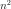
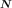
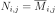
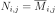
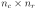
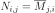
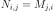

SquareComplexMatrix¶
-
class
SquareComplexMatrix(*args)¶ Complex square matrix.
Parameters: - size : int,
 , optional
, optional Matrix size. Default is 1.
- values : sequence of complex with size , optional
Values. OpenTURNS uses column-major ordering (like Fortran) for reshaping the flat list of values. Default creates a zero matrix.
Examples
Create a matrix
>>> import openturns as ot >>> M = ot.SquareComplexMatrix(2, range(2 * 2)) >>> print(M) [[ (0,0) (2,0) ] [ (1,0) (3,0) ]]
Get or set terms
>>> print(M[0, 0]) 0j >>> M[0, 0] = 1.0 >>> print(M[0, 0]) (1+0j) >>> print(M[:, 0]) [[ (1,0) ] [ (1,0) ]]
Create an openturns matrix from a square numpy 2d-array (or matrix, or 2d-list)…
>>> import numpy as np >>> np_2d_array = np.array([[1.0, 2.0], [3.0, 4.0]]) >>> ot_matrix = ot.SquareComplexMatrix(np_2d_array)
and back
>>> np_matrix = np.matrix(ot_matrix)
Attributes: thisownThe membership flag
Methods
clean(threshold)Clean the matrix according to a specific threshold. conjugate()Accessor to the conjugate complex matrix. conjugateTranspose()Accessor to the transposed conjugate complex matrix. getClassName()Accessor to the object’s name. getId()Accessor to the object’s id. getImplementation(*args)Accessor to the underlying implementation. getName()Accessor to the object’s name. getNbColumns()Accessor to the number of columns. getNbRows()Accessor to the number of rows. imag()Accessor to the imaginary part. isEmpty()Test whether the matrix is empty or not. real()Accessor to the real part. setName(name)Accessor to the object’s name. transpose()Accessor to the transposed complex matrix. getDimension solveLinearSystem -
__init__(*args)¶ Initialize self. See help(type(self)) for accurate signature.
-
clean(threshold)¶ Clean the matrix according to a specific threshold.
Parameters: - threshold : positive float
Numerical sample which is the collection of points stored by the history strategy.
-
conjugate()¶ Accessor to the conjugate complex matrix.
Returns: - N :
ComplexMatrix The conjugate matrix  of size
 associated with the given complex matrix
associated with the given complex matrix  such as
.
such as
.
- N :
-
conjugateTranspose()¶ Accessor to the transposed conjugate complex matrix.
Returns: - N :
ComplexMatrix The transposed conjugate matrix of size  associated with the given complex matrix
such as
.
- N :
-
getClassName()¶ Accessor to the object’s name.
Returns: - class_name : str
The object class name (object.__class__.__name__).
-
getId()¶ Accessor to the object’s id.
Returns: - id : int
Internal unique identifier.
-
getImplementation(*args)¶ Accessor to the underlying implementation.
Returns: - impl : Implementation
The implementation class.
-
getName()¶ Accessor to the object’s name.
Returns: - name : str
The name of the object.
-
getNbColumns()¶ Accessor to the number of columns.
Returns: - nc : integer
The number of columns of
.
-
getNbRows()¶ Accessor to the number of rows.
Returns: - nr : integer
The number of rows of
.
-
isEmpty()¶ Test whether the matrix is empty or not.
Returns: - isEmpty : bool
Flag telling whether the dimensions of the matrix is zero.
-
setName(name)¶ Accessor to the object’s name.
Parameters: - name : str
The name of the object.
-
thisown¶ The membership flag
-
transpose()¶ Accessor to the transposed complex matrix.
Returns: - N :
ComplexMatrix The transposed matrix of size associated with the given complex matrix
such as
.
- N :
- size : int,
 of size
of size  .
.